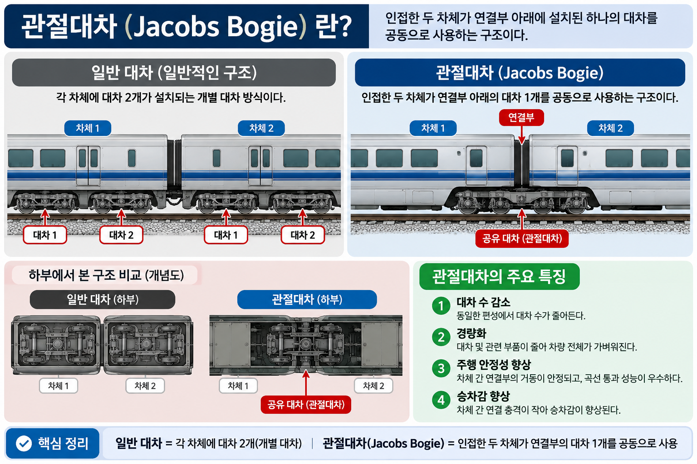

📌 SOURCE 88-B 수록 범위: 장치별 역할 구분(DB 기반). 세부 규격(전압 수치·동작 전류 등)은 SOURCE 원문 미확인으로 수록 범위에서 제외.
CONCEPT 03 — 관절대차 SOURCE 94-A-1
CONCEPT 03관절대차 (Articulated Bogie) — 구조·특성·함정
항목
내용
정의
인접한 두 차량이 하나의 대차를 공유하는 차량 구조
곡선 통과
우수 — 차량 간 이행부가 유연하게 연결되어 곡선 추종 성능 향상
승차감
향상 — 차량 간 진동 전달이 완화됨
대차 수
중간 대차를 공유하므로 일반 대차보다 수가 줄어든다
중량
가볍지 않음 — 구조가 복잡하고 중량이 늘어남 ← 오답 함정

[관절대차 이미지 — images/관절대차.png]
관절대차 — 인접 두 차량이 하나의 대차를 공유하는 구조
⚠️ 핵심 함정: "두 차량이 각자 독립된 대차를 가진다" → 오답.
관절대차는 인접 두 차량이 대차 하나를 공유한다는 것이 핵심 정의.
⚠️ "관절대차는 무게가 가볍다" → 오답. 구조 복잡도 증가로 중량 증가.
💡 적용 사례: TGV·Talgo 등 고속열차, 저상 트램(LRV) 등에서 곡선 통과 성능이 중요한 차량에 채택. PART 13에 미수록, UNIT 14-02 신규 수록.
CONCEPT 04 — 바이모달 트램 SOURCE 94-A-2
CONCEPT 04바이모달 트램 (Bi-modal Tram) — 도로·궤도 겸용 차량
📌 표기 정정: GATE4 SOURCE 94-A-2 원제는 "바이모달 트럭(Bi-modal Truck)"으로 기재. 현행 정식 명칭은 바이모달 트램(Bi-modal Tram)으로 정정 수록. railway-king DB(Q864)도 "바이모달트램"으로 표기됨.
항목
내용
주행 방식
고무바퀴로 일반 도로 주행 + 자기유도·광학 등으로 트램처럼 정밀 선로 추종
특징
레일 없이도 정해진 경로를 정밀 추종 — 도로·궤도 겸용 혼합형 도시 교통수단
DB 구분
Q864: LIM·모노레일·AGT와 함께 경량전철 방식으로 분류 (구분 포인트)
⚠️ 경량전철 방식 혼동 주의 (DB Q864):
"선형 유도전동기로 급구배·급곡선에 유리한 방식" → LIM (바이모달 트램이 아님)
바이모달 트램은 고무바퀴 도로 주행 + 정밀 선로 추종이 핵심.
CONCEPT 05 — 디젤기관차 시험 SOURCE 85
CONCEPT 05디젤기관차 시험·점검 — 시험 종류와 매연 측정 방식
▶ 시험 3종 (출력·연기·제동)
출력시험
엔진 출력·회전수 측정 성능 확인
연기(매연)시험
매연농도 측정 배출기준 적합 여부 확인
제동시험
제동장치 응답시간· 제동력 측정
▶ 매연시험 방식 3종 (DB Q742 기준)
광투과식
빛의 투과율로 매연 농도 측정
필터식
필터에 포집된 매연 농도 측정
하틀리지식
반사광 이용 매연 농도 측정
⚠️ 오답 함정 3종:
① 적외선분석식 — CO·HC·NOx 등 배기가스 성분(화학적) 측정용. 매연(연기) 농도 시험 방식이 아님.
② 정속모드 — 휘발유·LPG 자동차 종합검사용(40km/h 정속 주행). 디젤기관차에 적용 안 됨.
③ 절연시험 — 전차선 전압 인가·누설전류 측정. 전기기관차용 시험. 디젤기관차에 전차선 없어 해당 없음.
📌 4.html 개념85 충돌 메모: 4.html에 "매연 측정 방식 4가지(광투과·필터·하틀리지·적외선분석)"로 기재되어 있으나, DB Q742 원문은 적외선분석식을 오답(매연시험 방식 아님)으로 규정. UNIT 14-02는 Q742 원문 기준(3종) 적용.
DB 문항 — 6문항
Q1 · SOURCE 84-A · rk_ch83 (냉동사이클)
철도차량의 공기조화장치(냉방장치)의 냉동사이클 순서는?
① 압축 → 팽창 → 응축 → 증발
② 응축 → 압축 → 팽창 → 증발
③ 압축 → 응축 → 팽창 → 증발
④ 팽창 → 압축 → 응축 → 증발
정답: ③ | 암기: 압응팽증 — 응축과 팽창 순서 혼동이 주요 함정
Q2 · SOURCE 88-B · rk_ch83_09 (피뢰기)
교류모진이 발생할 때 작동하여 회로를 보호하는 장치는?
① ADCg
② 주퓨즈
③ 직류피뢰기
④ 교류피뢰기
정답: ③ | 직류피뢰기 → 교류모진 보호 / 주퓨즈 → 직류모진 보호 / 교류피뢰기 → 낙뢰·서지전압 보호 / ADCg → 교직류 절환
Q3 · SOURCE 94-A-1 · rk_ch83_35 (관절대차)
관절대차 특징으로 아닌 것은?
① 곡선 통과 성능이 우수하다
② 두 차량이 하나의 대차를 공유한다
③ 무게가 가볍다
④ 승차감이 향상된다
정답: ③ | 관절대차는 구조가 복잡하여 중량이 늘어남. "가볍다"는 오답.
Q4 · SOURCE 94-A-2 · rk_ch83_15 (바이모달 트램)
선형 유도전동기를 이용하여 레일과의 점착에 의존하지 않고 추진력을 얻으며, 급구배·급곡선에 유리한 방식의 차량은?
① LIM
② 모노레일
③ 바이모달트램
④ AGT
정답: ① LIM | 바이모달 트램은 고무바퀴 도로 주행 방식 — LIM과 혼동 주의
Q5 · SOURCE 85 · rk_ch83_01/02 (디젤기관차 매연시험 방식)
디젤기관차의 매연(연기) 시험 방식이 아닌 것은?
① 광투과식
② 필터식
③ 하틀리지식
④ 적외선분석식
정답: ④ | 적외선분석식은 CO·HC·NOx 등 배기가스 성분(화학적 오염물질) 측정 장비로, 매연 농도 시험 방식이 아님
Q6 · SOURCE 85 · rk_ch83_07 (디젤기관차 시험종류)
디젤견인차(디젤기관차)의 시험·점검 방법으로 옳지 않은 것은?
① 출력시험: 엔진의 출력 및 회전수를 측정하여 성능을 확인한다
② 연기시험: 매연농도를 측정하여 배출기준 적합 여부를 확인한다
③ 제동시험: 제동장치의 응답시간과 제동력을 측정한다
④ 절연시험: 전차선 전압을 인가하여 누설전류를 측정한다
정답: ④ | 절연시험은 전기기관차용. 전차선 전원을 사용하지 않는 디젤기관차에는 해당 없음